×
❮
 ❯
❯
Caption Bunga
Menghadirkan Rangkaian Bunga Segar & Premium Terbaik untuk Mengekspresikan Setiap Momen Berharga Anda.
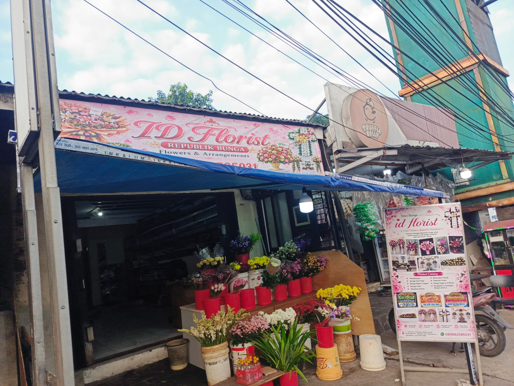
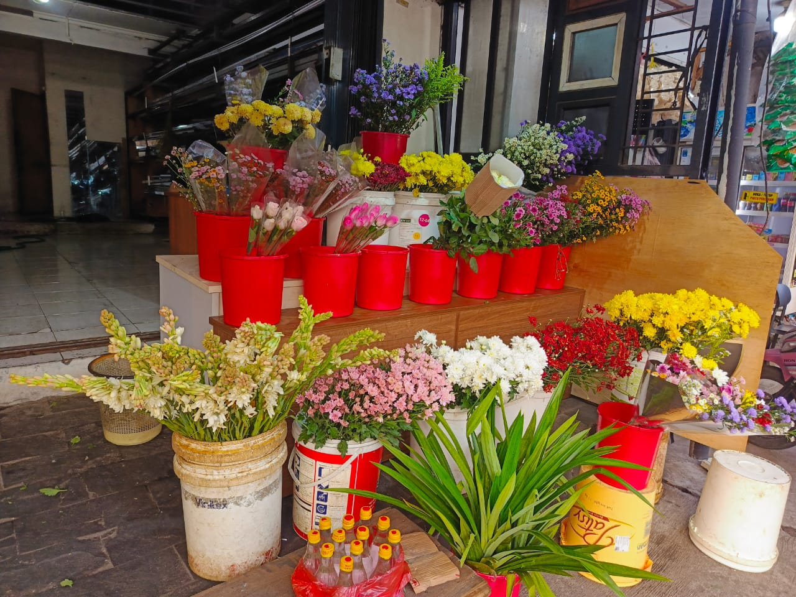
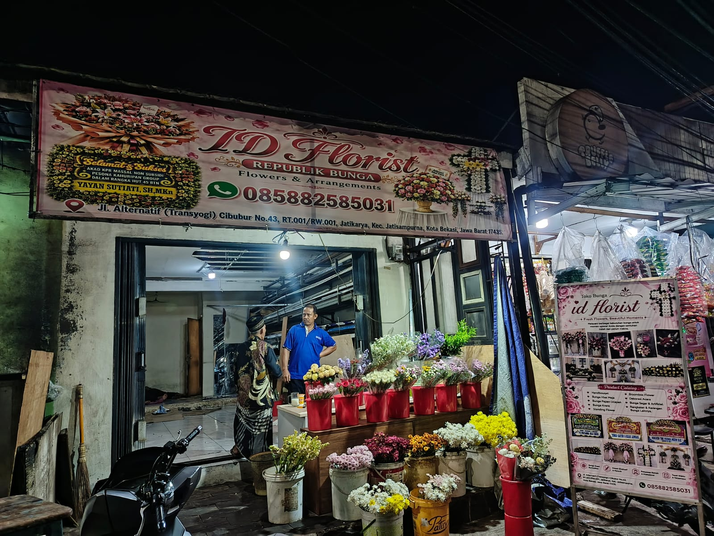
Id Florist | Cibubur_Cileungsi (dikenal sebagai Republik Bunga) adalah toko bunga terpercaya yang berlokasi di Jatikarya, Jatisampurna. Kami berkomitmen untuk menyajikan rangkaian bunga dengan kualitas premium, bunga segar pilihan, dan desain eksklusif untuk berbagai momen hidup Anda.
Kami melayani pembuatan dan pengiriman karangan bunga untuk wilayah Cibubur, Cileungsi, Bekasi, Bogor, Jakarta, dan sekitarnya. Baik untuk momen bahagia seperti pernikahan dan peresmian toko, maupun ucapan bela sungkawa, kami siap merangkainya dengan penuh dedikasi.
Dipilah langsung untuk ketahanan dan kesegaran maksimal.
Pengiriman aman dan tepat waktu ke lokasi tujuan.
Desain elegan yang disesuaikan dengan permintaan Anda.
Kami kirim foto hasil bunga sebelum dan sesampainya di lokasi.
Kami menyediakan berbagai tipe karangan bunga dengan keahlian merangkai profesional untuk memenuhi kebutuhan acara Anda.
Ungkapan bela sungkawa yang khidmat, dirangkai dengan kombinasi warna tenang dan susunan bunga duka cita formal.
Meriahkan pernikahan, wisuda, atau pelantikan jabatan dengan bunga papan penuh warna cerah yang elegan.
Beri ucapan selamat atas pembukaan toko, kantor, atau usaha baru sebagai bentuk dukungan kesuksesan relasi Anda.
Rangkaian bunga melingkar duka cita bergaya premium dan minimalis, cocok untuk diletakkan di dalam rumah duka.
Rangkaian standing flower mewah di atas tripod kayu/besi untuk peresmian, hiasan altar gereja, maupun dekorasi panggung.
Buket bunga tangan eksklusif untuk momen ulang tahun, hari jadi (anniversary), kelulusan, wisuda, maupun kado romantis.
Intip hasil karya terbaik kami. Klik kategori untuk menyaring, klik foto untuk memperbesar tampilan.
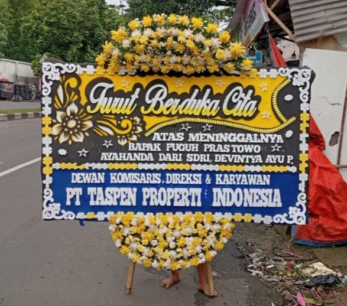
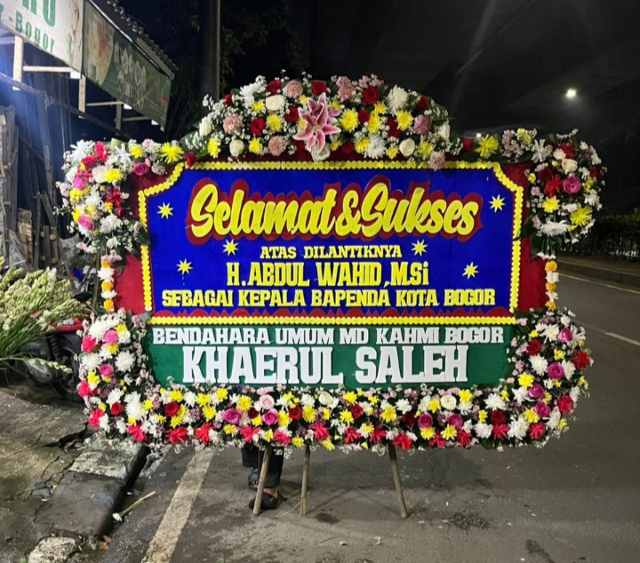
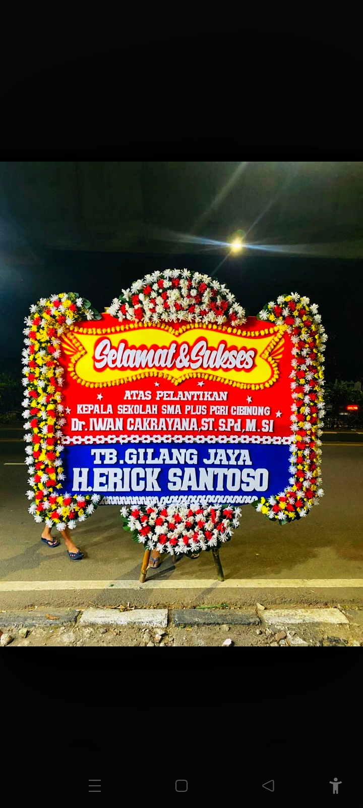
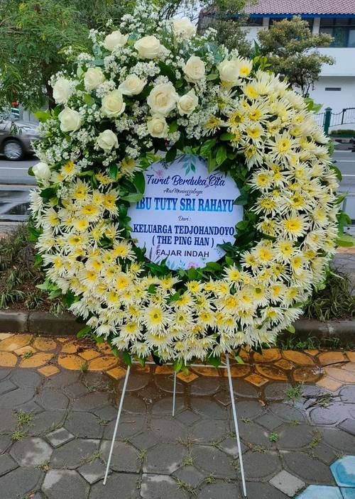
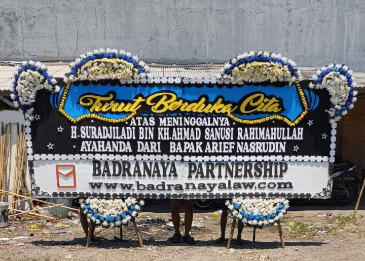
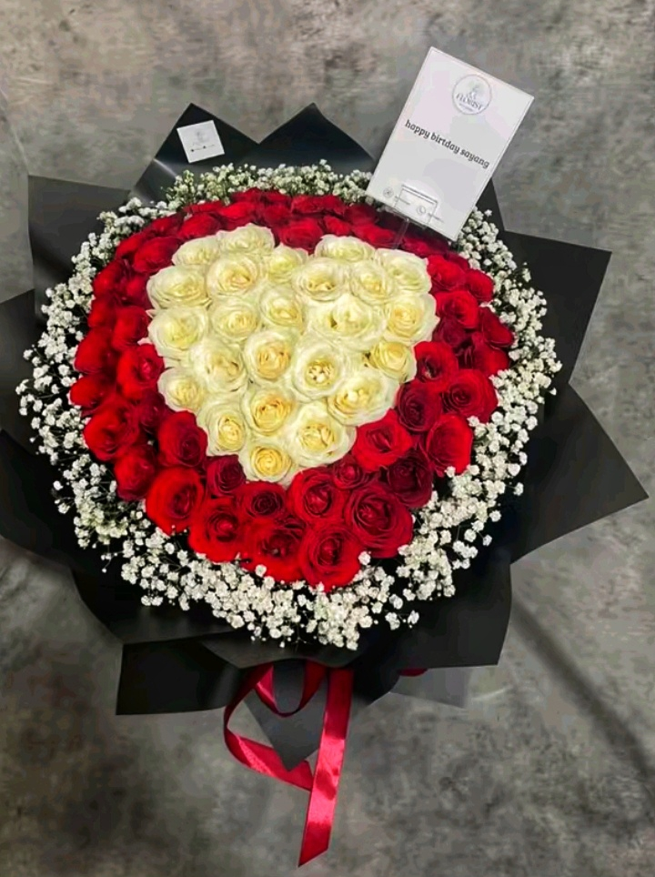
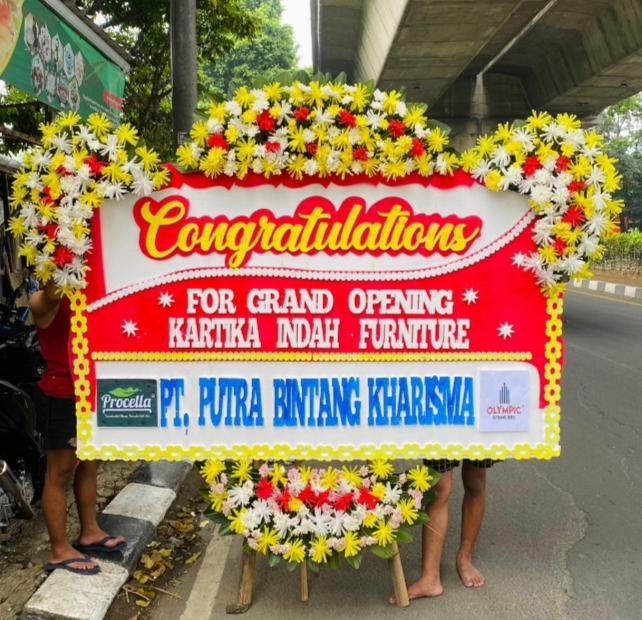
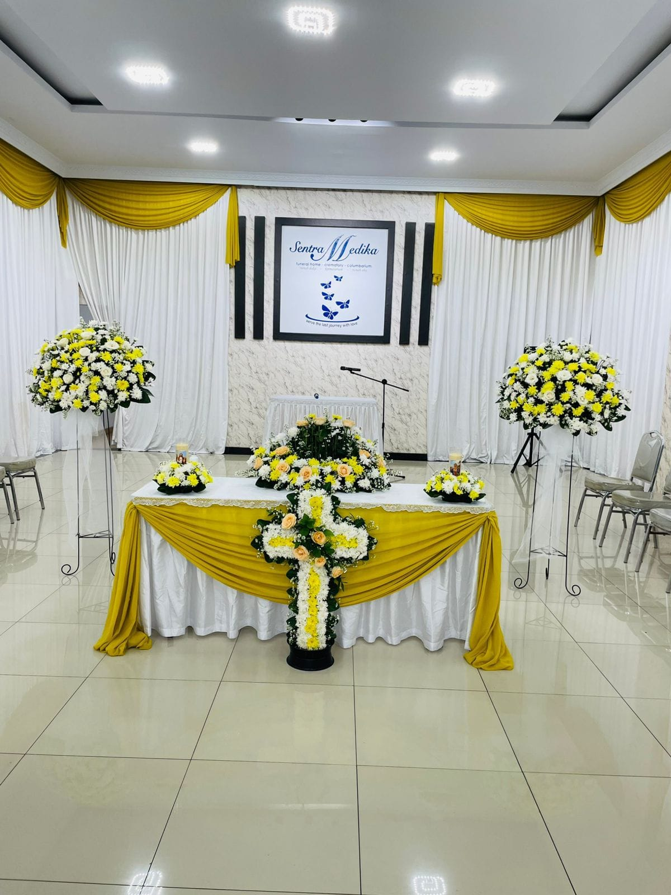
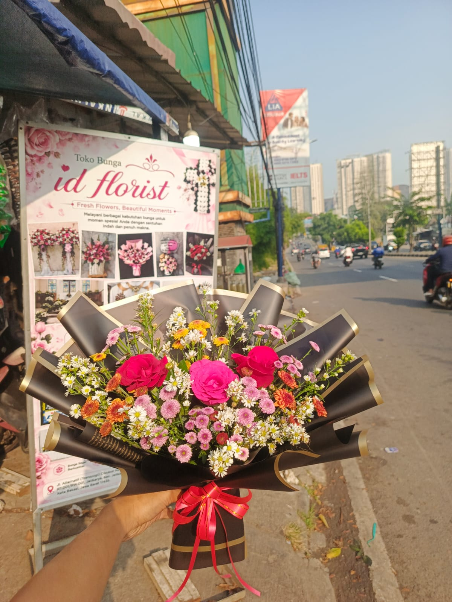
Proses pemesanan bunga di Id Florist sangat mudah, transparan, dan terpercaya.
Pilih salah satu referensi karangan bunga dari galeri kami di atas, atau diskusikan konsep custom buket/papan yang Anda inginkan dengan tim perangkai kami.
Kirimkan gambar referensi yang dipilih ke WhatsApp kami di 085882585031 beserta detail tulisan ucapan (Nama Pengirim, Nama Penerima) dan Alamat Pengiriman.
Lakukan pelunasan pembayaran secara mudah melalui transfer bank ke rekening resmi yang diinfokan oleh admin kami.
Bunga akan segera dirangkai oleh tim ahli. Sebelum bunga diberangkatkan ke lokasi, admin kami akan mengirimkan foto preview hasil jadi karangan bunga Anda.
Bunga dikirim menggunakan kurir armada khusus toko kami agar aman di perjalanan. Setelah sampai di lokasi acara, kami akan mengirimkan foto bunga di lokasi.
Siap melayani pesanan Anda 24 jam untuk bunga papan duka cita, dan jam operasional reguler untuk buket & dekorasi.
Ada pertanyaan mengenai produk, harga paket dekorasi, atau area jangkauan pengiriman? Jangan ragu untuk menghubungi kami melalui media komunikasi berikut:
Jl. Alternatif (Transyogi) Cibubur, RT.001/RW.001, Jatikarya, Kec. Jatisampurna, Bekasi, Jawa Barat 17435